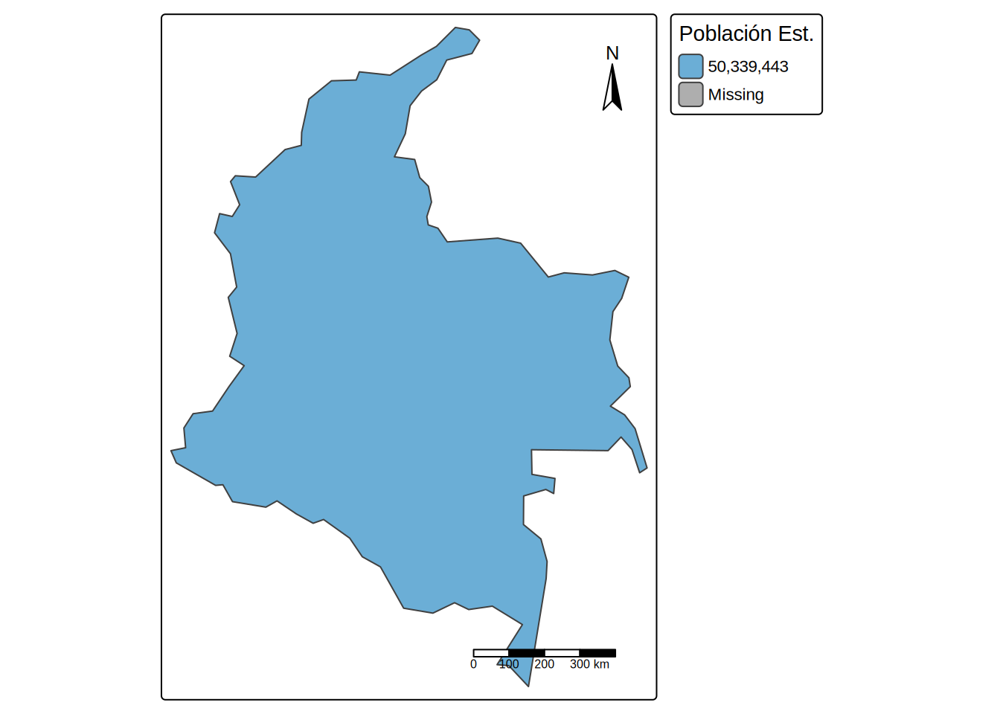

[v3->v4] `tm_tm_polygons()`: migrate the argument(s) related to the scale of
the visual variable `fill` namely 'palette' (rename to 'values') to fill.scale
= tm_scale(<HERE>).
[v3->v4] `tm_polygons()`: migrate the argument(s) related to the legend of the
visual variable `fill` namely 'title' to 'fill.legend = tm_legend(<HERE>)'
! `tm_scale_bar()` is deprecated. Please use `tm_scalebar()` instead.
The visual variable `fill` of the layer "polygons" contains a unique value.
Therefore a discrete scale is applied (tm_scale_discrete).
[cols4all] color palettes: use palettes from the R package cols4all. Run
`cols4all::c4a_gui()` to explore them. The old palette name "Blues" is named
"brewer.blues"
Multiple palettes called "blues" found: "brewer.blues", "matplotlib.blues". The first one, "brewer.blues", is returned.

# --- Usando ggplot2 (Gramática de gráficos) ---ggplot() +geom_sf(data = col, fill ="orange", color ="black") +# Barra de escalaannotation_scale(location ="bl", # bottom leftwidth_hint =0.3 ) +# Brújulaannotation_north_arrow(location ="tr", # top rightwhich_north ="true",style = north_arrow_fancy_orienteering ) +theme_minimal() +labs(title ="Mapa de Colombia con ggplot2")
import leafmap# 1. Crear el objeto mapa centrado en el Ecuador con zoom global# Leafmap permite usar diversos mapas base por defectom = leafmap.Map(center=[0, 0], zoom=2)# 2. Definir la ruta del archivo GeoJSON (Cables submarinos)# Se utiliza una URL de release para mayor compatibilidad con los drivers GDALin_geojson = ("https://github.com/opengeos/datasets/releases/download/vector/cables.geojson")# 3. Añadir la capa al mapa con un nombre específico# Este método lee el archivo remoto y lo renderiza sobre el mapa basem.add_geojson(in_geojson, layer_name="Líneas de Cable")# 4. Mostrar el mapa interactivom
library(sf)library(mapview)# 1. Crear punto de referencia UNAL Bogotá (EPSG:4326)unal <-st_sfc(st_point(c(-74.08, 4.63)), crs =4326)# 2. Visualización interactiva inmediata# Genera automáticamente controles de capas y mapas basemapview(unal, col.regions ="red", layer.name ="Sede Bogotá")
Nota
Intenté que se visualizara en el html el codigo de 02_python_dinamico.ipynb, pero siempre arrojó el siguiente error:
Error in py_call_impl(callable, call_args\(unnamed, call_args\)named) : Exception: Object of type ndarray is not JSON serializable Run reticulate::py_last_error() for details. Calls: .main … eng_python_autoprint -> as_r_value -> -> py_call_impl
Quitting from Prueba1.qmd:129-148 [unnamed-chunk-5] Execution halted
Dentro de lo que investigué encontré que es un problema en el renderizado por usar un motor de R, aparentemente no soporta muy bien los mapas interactivos. Para ello encontré que es mejor usar jupyter como motor, pero no soporta mezclar R y python en el mismo codigo, no supe muy bien como solucionar este problema así que para efectos del renderizado no se ejecutó (Aunque en jupyter corre sin problema alguno).
Parte B — Desafío de Exploración
Mapa de Pendientes (Clasificación IGAC %) - Cundinamarca
Clasificación de Pendientes (IGAC) en Cundinamarca
Make this Notebook Trusted to load map: File -> Trust Notebook
Nota
A pesar que en jupyter notebook el codigo ejecuta la leyenda y no presenta ningún problema, al momento de renderizarlo en quarto este no soporta la leyenda, aparentemente es por que la leyenda se intenta cargar como un widget y para lograrlo hubo que agregar la leyenda manualmente.
Preguntas de Análisis
1.Facilidad e Intuición
Basado en los 4 notebooks de clase: ¿Cuál de las librerías les pareció más intuitiva para un usuario que nunca ha programado?
Respuesta
Personalmente creo que tmap y ggplot2 son más intuitivos y utilizan menos lineas de codigo y mas faciles de interpretar, aunque geopandas tampoco es particularmente dificil.
2.Calidad Cartográfica
Para la entrega de un informe técnico en PDF, ¿qué motor consideran que genera mapas estáticos con mejor acabado visual
Respuesta
Las composiciones cartograficas que he realizdo en mi desarrollo profesional han sido mayormente hechas en Qgis o ArcMap donde el visor facilita el desarrollo del componente artistico de la cartografia. Aunque entre los mapas renderizados en este ejercicio me parecen mas esteticos y con mejor acabado los generados en R, aunque supongo que esto también dependerá de la parametrización y el codigo empleado.
3.Potencial de la Documentación
Al revisar las URL de documentación entregadas, ¿qué funcionalidad avanzada encontraron en el ecosistema de OpenGeos que les sería útil para su trabajo final o investigación?
Respuesta
Me parece bastante interesante Geemap para conectar Google Earth Engine directamente con python y trabajar todo en un solo codigo y no alternar entre distintos entornos y lenguajes de programación. Esto es particularmente util dado que permite explotar la capacidad de computo de engine y su repositorio de datos.
4.Elección de Herramientas
Si tuvieran que atender una emergencia ambiental real y necesitan desplegar un visor web en menos de 5 minutos para que personal no técnico visualice una inundación, ¿qué herramienta elegirían y por qué? (Máximo 5 líneas).
Respuesta
Aparentemente la ruta mas facil es con un codigo de python que conecte el archivo con la información que se desea representar con folium, el cual genera un codigo en Leaflet que es una librería JavaScript para mapas interactivos en navegador.